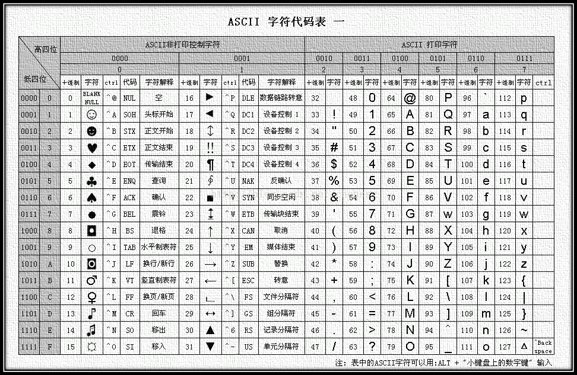

目录
笔记
Source
http://nodejs.cn/ node.js中文网
https://www.liaoxuefeng.com/wiki/001434446689867b27157e896e74d51a89c25cc8b43bdb3000/001434499190108eec0bdf14e704a09935cd112e501e31a000 js教程
http://blog.csdn.net/byxdaz/article/details/5461142 同步IO和异步IO
https://angular.cn/ angular框架
https://jsfiddle.net/chrisvfritz/50wL7mdz/ Vue.js
https://cn.vuejs.org/v2/guide/ Vue.js
JAVA
ASCII码

Blank
打印出来的命名是空格，就是 trim() 不管用。第一次知道还有160号空格。
System.out.println(StringEscapeUtils.unescapeHtml4(" ").equals(" "));
System.out.println((int)StringEscapeUtils.unescapeHtml4(" ").charAt(0));
System.out.println((int)' ');
控制台结果：
false
160
32
BigDecimal
BigDecimal perSum = sum.divide(period,2, BigDecimal.ROUND_HALF_UP);除法需要给精度，防止不整除
Non-terminating decimal expansion: BigDecimal 通过BigDecimal的divide方法进行除法时当不整除，出现无限循环小数时，就会抛异常
divide(xxxxx,2, BigDecimal.ROUND_HALF_EVEN)
ROUND_CEILING向正无穷方向舍入
ROUND_DOWN向零方向舍入
ROUND_FLOOR向负无穷方向舍入
ROUND_HALF_DOWN向（距离）最近的一边舍入，除非两边（的距离）是相等,如果是这样，向下舍入,例如1.55保留一位小数结果为1.5
ROUND_HALF_EVEN向（距离）最近的一边舍入，除非两边（的距离）是相等,如果是这样，如果保留位数是奇数，使用ROUND_HALF_UP，如果是偶数，使用ROUND_HALF_DOWN
ROUND_HALF_UP向（距离）最近的一边舍入，除非两边（的距离）是相等,如果是这样，向上舍入, 1.55保留一位小数结果为1.6
ROUND_UNNECESSARY计算结果是精确的，不需要舍入模式
ROUND_UP向远离0的方向舍入
BigDecimal a = new BigDecimal(7);
BigDecimal b = new BigDecimal(6);
System.out.println(a.divide(b,2,RoundingMode.HALF_UP));
RoundingMode
ROUND_CEILING 向正无穷方向舍入
ROUND_DOWN 向零方向舍入
ROUND_FLOOR 向负无穷方向舍入
ROUND_HALF_DOWN 向（距离）最近的一边舍入，除非两边（的距离）是相等,如果是这样，向下舍入, 例如1.55 保留一位小数结果为1.5
ROUND_HALF_EVEN 向（距离）最近的一边舍入，除非两边（的距离）是相等,如果是这样，如果保留位数是奇数，使用ROUND_HALF_UP ，如果是偶数，使用ROUND_HALF_DOWN
ROUND_HALF_UP 向（距离）最近的一边舍入，除非两边（的距离）是相等,如果是这样，向上舍入, 1.55保留一位小数结果为1.6
ROUND_UNNECESSARY 计算结果是精确的，不需要舍入模式
ROUND_UP 向远离0的方向舍入
Calendar_GregorianCalendar
日历类 主要涉及两个类，一个就是抽象类 Calendar类，另一个是他的子类GregorianCalendar。
Calendar类
1_主要字段
YEAR（年份）
MONTH（月份从0开始）
DATE(一月的某天)
HOUR（指示上午或下午的小时）
HOUR_F_DAY(指示一天中的小时。)
DAY_OF_WEEK （一个星期中的某天）
DAY_OF_MONTH（一个月中的某天）
DAY_OF_YEAR（一年中的某天）
DAY_OF_WEEK _IN_MONTH（一个月中的第几个星期）
WEEK_OF_MONTH (指示当前月中的星期数)
WEEK_OF_YEAR(指示当前年中的星期数)
2_得Calendar类对象
//通过 Calendar类的静态方法getInstance获得。
Calendar ca = Calendar.getInstance();
3_主要方法
void set(int field,int value)//field日历类的参数，比如YEAR MONTH DATE 等...
void set(int year,int month,int date)//设置年月日。
void set(int year, int month, int date, int hourOfDay, int minute)//设置年月日时分
void set(int year, int month, int date, int hourOfDay, int minute, int second)//设置年月日时分秒
void setTime(Date date);//使用给定的 Date 设置此 Calendar 的时间。
int get(int field)//返回给定日历字段的值。如：int month = acobj.get(Calendar.MONTH);
Date getTime()//返回一个表示此 Calendar 时间值的 Date 对象。
long getTimeInMillis()//返回从1970.1.1 00：00：00到该日历的毫秒数。
void add(int field,amont);//根据日历的规则，为给定的日历字段添加或减去指定的时间量。可加减。如：caobj.add(Calendar.MONTH,1)下一个月。
GregorianCalendar类
1_获得该类对象
Calendar ca = new GregorianCalendar()//默认当前的时刻。
Calendar ca = new GregorianCanlendar(int year,int month,int dayOfMonth)//初始具有指定年月日的公历类对象。
Calendar ca = new GregorianCanlendar(int year,int month,int dayOfMonth,int hourOfDay,int minute)初始具有指定年月日的公历类对象。
Calendar ca = new GregorianCanlendar(int year,int month,int dayOfMonth,int hourOfDay,int minute,int second)//初始具有指定年月日的公历类对象。
上边的都是获得默认的语言环境，和默认的时区 对象。
2_用法
用法主要继承去父类Calendar。
附一演示程序：
[java] view plain copy
package Calendar;
import java.util.Calendar;
import java.util.GregorianCalendar;
public class CalendarDemo {
/**
* @param args
*/
public static void main(String[] args) {
//获得一个日历对象
Calendar ca = Calendar.getInstance();
// ca.setFirstDayOfWeek(Calendar.SATURDAY);
disPlay(ca);
//创建日历对象时间为2012.12.12.12,12,12
Calendar c2 = new GregorianCalendar(2012, 11, 12, 12, 12, 12);
disPlay(ca);
//根据在年中的天数,求相隔天数。
int days = c2.get(Calendar.DAY_OF_YEAR)-ca.get(Calendar.DAY_OF_YEAR);
System.out.println("相差"+days+"天");
//重新设定c2对象的时间
System.out.println("+++++++++++++++++重新设定后时间++++++++++++：");
c2.set(2012,11,23);//月份和日期都是0开头。月份中0表示一月。月中的日期，0表示一日。
c2.set(Calendar.HOUR, 22);
c2.set(Calendar.MINUTE,12);
c2.set(Calendar.SECOND, 12);
disPlay(c2);
System.out.println("+++++++++++++++++修改后时间++++++++++++：");
//向后延长29天
ca.add(Calendar.DAY_OF_YEAR,29);
disPlay(ca);
//再延长10小时
ca.add(Calendar.HOUR, 4);
disPlay(ca);
}
public static void disPlay(Calendar ca) {
String []mon = {"一月","二月","三月","四月","五月","六月","七月","八月","九月","十月","十一月","十二月"};
String []week = {"","星期日","星期一","星期二","星期三","星期四","星期五","星期六"};
System.out.print(ca.get(Calendar.YEAR)+"年");
System.out.print(mon[ca.get(Calendar.MONTH)]);
System.out.print(ca.get(Calendar.DAY_OF_MONTH)+"日");
System.out.println(week[ca.get(Calendar.DAY_OF_WEEK)]);
System.out.print("时间：");
System.out.print(ca.get(Calendar.HOUR_OF_DAY)+":");
System.out.print(ca.get(Calendar.MINUTE)+":");
System.out.println(ca.get(Calendar.SECOND));
}
}
[java] view plain copy
运行结果：
[java] view plain copy
2012年十二月8日星期六
时间：20:42:38
2012年十二月8日星期六
时间：20:42:38
相差4天
+++++++++++++++++重新设定后时间++++++++++++：
2012年十二月24日星期一
时间：10:12:12
+++++++++++++++++修改后时间++++++++++++：
2013年一月6日星期日
时间：20:42:38
2013年一月7日星期一
时间：0:42:38
Drools_JAVA规则引擎
Drools是一个基于java的规则引擎，开源的，可以将复杂多变的规则从硬编码中解放出来，以规则脚本的形式存放在文件中，使得规则的变更不需要修正代码重启机器就可以立即在线上环境生效。
本文所使用的demo已上传 http://download.csdn.net/source/3002213
1_Drools语法
开始语法之前首先要了解一下drools的基本工作过程，通常而言我们使用一个接口来做事情，首先要穿进去参数，其次要获取到接口的实现执行完毕后的结果，而drools也是一样的，我们需要传递进去数据，用于规则的检查，调用外部接口，同时还可能需要获取到规则执行完毕后得到的结果。在drools中，这个传递数据进去的对象，术语叫 Fact对象。Fact对象是一个普通的java bean，规则中可以对当前的对象进行任何的读写操作，调用该对象提供的方法，当一个java bean插入到workingMemory中，规则使用的是原有对象的引用，规则通过对fact对象的读写，实现对应用数据的读写，对于其中的属性，需要提供getter setter访问器，规则中，可以动态的往当前workingMemory中插入删除新的fact对象。
规则文件可以使用 .drl文件，也可以是xml文件，这里我们使用drl文件。
规则语法：
package：对一个规则文件而言，package是必须定义的，必须放在规则文件第一行。特别的是，package的名字是随意的，不必必须对应物理路径，跟java的package的概念不同，这里只是逻辑上的一种区分。同样的package下定义的function和query等可以直接使用。
比如：package com.drools.demo.point
import：导入规则文件需要使用到的外部变量，这里的使用方法跟java相同，但是不同于java的是，这里的import导入的不仅仅可以是一个类，也可以是这个类中的某一个可访问的静态方法。
比如：
import com.drools.demo.point.PointDomain;
import com.drools.demo.point.PointDomain.getById;
rule：定义一个规则。rule "ruleName"。一个规则可以包含三个部分：
属性部分：定义当前规则执行的一些属性等，比如是否可被重复执行、过期时间、生效时间等。
条件部分，即LHS，定义当前规则的条件，如 when Message(); 判断当前workingMemory中是否存在Message对象。
结果部分，即RHS，这里可以写普通java代码，即当前规则条件满足后执行的操作，可以直接调用Fact对象的方法来操作应用。
规则事例：
rule "name"
no-loop true
when
$message:Message(status == 0)
then
System.out.println("fit");
$message.setStatus(1);
update($message);
end
上述的属性中：
no-loop : 定义当前的规则是否不允许多次循环执行，默认是false，也就是当前的规则只要满足条件，可以无限次执行。什么情况下会出现一条规则执行过一次又被多次重复执行呢？drools提供了一些api，可以对当前传入workingMemory中的Fact对象进行修改或者个数的增减，比如上述的update方法，就是将当前的workingMemory中的Message类型的Fact对象进行属性更新，这种操作会触发规则的重新匹配执行，可以理解为Fact对象更新了，所以规则需要重新匹配一遍，那么疑问是之前规则执行过并且修改过的那些Fact对象的属性的数据会不会被重置？结果是不会，已经修改过了就不会被重置，update之后，之前的修改都会生效。当然对Fact对象数据的修改并不是一定需要调用update才可以生效，简单的使用set方法设置就可以完成，这里类似于java的引用调用，所以何时使用update是一个需要仔细考虑的问题，一旦不慎，极有可能会造成规则的死循环。上述的no-loop true，即设置当前的规则，只执行一次，如果本身的RHS部分有update等触发规则重新执行的操作，也不要再次执行当前规则。
但是其他的规则会被重新执行，岂不是也会有可能造成多次重复执行，数据紊乱甚至死循环？答案是使用其他的标签限制，也是可以控制的：lock-on-active true
lock-on-active true：通过这个标签，可以控制当前的规则只会被执行一次，因为一个规则的重复执行不一定是本身触发的，也可能是其他规则触发的，所以这个是no-loop的加强版。当然该标签正规的用法会有其他的标签的配合，后续提及。
date-expires：设置规则的过期时间，默认的时间格式：“日-月-年”，中英文格式相同，但是写法要用各自对应的语言，比如中文："29-七月-2010"，但是还是推荐使用更为精确和习惯的格式，这需要手动在java代码中设置当前系统的时间格式，后续提及。属性用法举例：date-expires "2011-01-31 23:59:59" // 这里我们使用了更为习惯的时间格式
date-effective：设置规则的生效时间，时间格式同上。
duration：规则定时，duration 3000 3秒后执行规则
salience：优先级，数值越大越先执行，这个可以控制规则的执行顺序。
其他的属性可以参照相关的api文档查看具体用法，此处略。
规则的条件部分，即LHS部分：
when：规则条件开始。条件可以单个，也可以多个，多个条件一次排列，比如
when
eval(true)
$customer:Customer()
$message:Message(status==0)
上述罗列了三个条件，当前规则只有在这三个条件都匹配的时候才会执行RHS部分，三个条件中第一个
eval(true)：是一个默认的api，true 无条件执行，类似于 while(true)
$message:Message(status==0) 这句话标示的：当前的workingMemory存在Message类型并且status属性的值为0的Fact对象，这个对象通常是通过外部java代码插入或者自己在前面已经执行的规则的RHS部分中insert进去的。
前面的$message代表着当前条件的引用变量，在后续的条件部分和RHS部分中，可以使用当前的变量去引用符合条件的FACT对象，修改属性或者调用方法等。可选，如果不需要使用，则可以不写。
条件可以有组合，比如：
Message(status==0 || (status > 1 && status <=100))
RHS中对Fact对象private属性的操作必须使用getter和setter方法，而RHS中则必须要直接用.的方法去使用，比如
$order:Order(name=="qu")
$message:Message(status==0 && orders contains $order && $order.name=="qu")
特别的是，如果条件全部是 &&关系，可以使用“,”来替代，但是两者不能混用
如果现在Fact对象中有一个List，需要判断条件，如何判断呢？
看一个例子：
Message {
int status;
List<String> names;
}
$message:Message(status==0 && names contains "网易" && names.size >= 1)
上述的条件中，status必须是0，并且names列表中含有“网易”并且列表长度大于等于1
contains：对比是否包含操作，操作的被包含目标可以是一个复杂对象也可以是一个简单的值。
Drools提供了十二中类型比较操作符：
> >= < <= == != contains / not contains / memberOf / not memberOf /matches/ not matches
not contains：与contains相反
memberOf：判断某个Fact属性值是否在某个集合中，与contains不同的是他被比较的对象是一个集合，而contains被比较的对象是单个值或者对象。
not memberOf：正好相反。
matches：正则表达式匹配，与java不同的是，不用考虑'/'的转义问题
not matches:正好相反。
规则的结果部分
当规则条件满足，则进入规则结果部分执行，结果部分可以是纯java代码，比如：
then
System.out.println("OK"); //会在控制台打印出ok
end
当然也可以调用Fact的方法，比如 $message.execute();操作数据库等等一切操作。
结果部分也有drools提供的方法：
insert：往当前workingMemory中插入一个新的Fact对象，会触发规则的再次执行，除非使用no-loop限定；
update：更新
modify：修改，与update语法不同，结果都是更新操作
retract：删除
RHS部分除了调用Drools提供的api和Fact对象的方法，也可以调用规则文件中定义的方法，方法的定义使用 function 关键字
function void console {
System.out.println();
StringUtils.getId();// 调用外部静态方法，StringUtils必须使用import导入，getId()必须是静态方法
}
Drools还有一个可以定义类的关键字：
declare 可以再规则文件中定义一个class，使用起来跟普通java对象相似，你可以在RHS部分中new一个并且使用getter和setter方法去操作其属性。
declare Address
@author(quzishen) // 元数据，仅用于描述信息
@createTime(2011-1-24)
city : String @maxLengh(100)
postno : int
end
上述的'@'是什么呢？是元数据定义，用于描述数据的数据~，没什么执行含义
你可以在RHS部分中使用Address address = new Address()的方法来定义一个对象。
更多的规则语法，可以参考其他互联网资料，推荐：
（写的很基础，但是部分语法写的有些简单，含糊不好理解）
http://wenku.baidu.com/view/a6516373f242336c1eb95e7c.html
Ehcache的配置
1_pom_xml
<dependency>
<groupId>net.sf.ehcache</groupId>
<artifactId>ehcache-core</artifactId>
<version>2.6.11</version>
</dependency>
<dependency>
<groupId>org.springframework</groupId>
<artifactId>spring-context-support</artifactId>
<version>4.2.3.RELEASE</version>
</dependency>
2_create_new_file_cache-config_xml
<?xml version="1.0" encoding="UTF-8"?>
<beans xmlns="http://www.springframework.org/schema/beans"
xmlns:xsi="http://www.w3.org/2001/XMLSchema-instance"
xmlns:cache="http://www.springframework.org/schema/cache"
xsi:schemaLocation="http://www.springframework.org/schema/beans
http://www.springframework.org/schema/beans/spring-beans.xsd
http://www.springframework.org/schema/cache
http://www.springframework.org/schema/cache/spring-cache.xsd ">
<cache:annotation-driven cache-manager="cacheManager"/>
<bean id="ehcacheManager" class="org.springframework.cache.ehcache.EhCacheManagerFactoryBean">
<property name="configLocation" value="classpath:ehcache.xml"/>
</bean>
<bean id="cacheManager" class="org.springframework.cache.ehcache.EhCacheCacheManager">
<property name="cacheManager" ref="ehcacheManager"/>
<property name="transactionAware" value="true"/>
</bean>
</beans>
3_create_new_file_ehcache_xml
<?xml version="1.0" encoding="UTF-8"?>
<ehcache xmlns:xsi="http://www.w3.org/2001/XMLSchema-instance"
xsi:noNamespaceSchemaLocation="http://ehcache.org/ehcache.xsd"
updateCheck="false">
<diskStore path="java.io.tmpdir"/>
<defaultCache eternal="false"
maxEntriesLocalHeap="1000"
overflowToDisk="false"
diskPersistent="false"
timeToIdleSeconds="3600"
timeToLiveSeconds="3600"/>
<cache name="baseCache"
eternal="false"
maxEntriesLocalHeap="200"
overflowToDisk="false"
diskPersistent="false"
timeToIdleSeconds="600"
statistics="true"
timeToLiveSeconds="600"/>
<!--
eternal="false" // 元素是否永恒,如果是就永不过期(必须设置)
maxElementsInMemory="1000" // 缓存容量的内存最大值(必须设置)
overflowToDisk="false" // 当缓存达到maxElementsInMemory值是,是否允许溢出到磁盘(必须设置)
diskPersistent="false" // 磁盘缓存在VM重新启动时是否保持(默认为false)
timeToIdleSeconds="0" // 导致元素过期的访问间隔(秒为单位). 0表示可以永远空闲,默认为0
timeToLiveSeconds="600" // 元素在缓存里存在的时间(秒为单位). 0 表示永远存在不过期
memoryStoreEvictionPolicy="LFU" // 当达到maxElementsInMemory时,如何强制进行驱逐默认使用"最近使用(LRU)"策略,其它还有先入先出FIFO,最少使用LFU,较少使用LRU
-->
</ehcache>
4_add_cache-config_xml_to_main_spring_xml
<import resource="cache-config.xml"/>
或者
web.xml
<context-param>
<param-name>contextConfigLocation</param-name>
<param-value>classpath*:applicationContext.xml,classpath:cache-config.xml</param-value>
</context-param>
5_application
import org.springframework.cache.annotation.Cacheable;
import java.util.List;
public class UserDao extends BaseDao {
//这里
@Cacheable(value = "baseCache")
public UserTable getUserByDeviceId(String deviceId) {
if (deviceId != null) {
List<UserTable> list = (List<UserTable>) getHibernateTemplate()
.find("From UserTable u where u.deviceId='" + deviceId
+ "'");
if (list != null && list.size() > 0) {
return list.get(0);
}
}
return null;
}
}
Excel
获取xls中的值
private static String getValue(HSSFCell hssfCell) {
if(null==hssfCell){
return "";
}
if(hssfCell.getCellType()==HSSFCell.CELL_TYPE_NUMERIC){
return hssfCell.getNumericCellValue()+"";
}
if(hssfCell.getCellType()==HSSFCell.CELL_TYPE_FORMULA){
return String.valueOf(hssfCell.getNumericCellValue());
}
return String.valueOf(hssfCell.getStringCellValue());
}
日期的数字转日期
int days = Double.valueOf(value).intValue();
String date = DateUtil.getThen("18991231",days,1,"yyyyMMdd");
return date;
Exception
IllegalFormatConversionException
IllegalFormatConversionException: d != java.lang.String
占位符代表的格式化类型必须与参数的类型相兼容，否则运行时会抛出异常
System.out.println(String.format("'b':将参数格式化为boolean类型输出，'B'的效果相同,但结果中字母为大写。%b", false));
System.out.println(String.format("'h':将参数格式化为散列输出，原理：Integer.toHexString(arg.hashCode())，'H'的效果相同,但结果中字母为大写。%h", "ABC"));
System.out.println(String.format("'s':将参数格式化为字符串输出，如果参数实现了 Formattable接口，则调用 formatTo方法。'S'的效果相同。%s", 16));
System.out.println(String.format("FormatImpl类实现了Formattable接口：%s", new FormatImpl()));
System.out.println(String.format("'c':将参数格式化为Unicode字符，'C'的效果相同。%c", 'A'));
System.out.println(String.format("'d':将参数格式化为十进制整数。%d", 11));
System.out.println(String.format("'o':将参数格式化为八进制整数。%o", 9));
System.out.println(String.format("'x':将参数格式化为十六进制整数。%x", 17));
System.out.println(String.format("'e':将参数格式化为科学计数法的浮点数，'E'的效果相同。%E", 10.000001));
System.out.println(String.format("'f':将参数格式化为十进制浮点数。%f", 10.000001));
System.out.println(String.format("'g':根据具体情况，自动选择用普通表示方式还是科学计数法方式，'G'效果相同。10.01=%g", 10.01));
System.out.println(String.format("'g':根据具体情况，自动选择用普通表示方式还是科学计数法方式，'G'效果相同。10.00000000005=%g", 10.00000000005));
System.out.println(String.format("'a':结果被格式化为带有效位数和指数的十六进制浮点数，'A'效果相同,但结果中字母为大写。%a", 10.1));
System.out.println(String.format("'t':时间日期格式化前缀，会在后面讲述"));
System.out.println(String.format("'%%':输出%%。%%"));
System.out.println(String.format("'n'平台独立的行分隔符。System.getProperty("line.separator")可以取得平台独立的行分隔符，但是用在format中间未免显得过于烦琐了%n已经换行"));
Multiple_annotations
Multiple annotations found at this line:
- The superclass "javax.servlet.http.HttpServlet" was not found on the Java
Build Path 因为没有安装指定的server，从Windows Preference中的server->RunTime Environment中增加指定的server
UnsupportedClassVersionError
Exception in thread "main" java.lang.UnsupportedClassVersionError
这个是典型的用高版本的JDK编译产生的class文件，用低版本的JDK运行这个class文件时产生的异常。
当这个问题在doc命令行产生时，应该用两个命令看一下：
用javac -version得到编译器的版本，用Java -version获得jdk的版本，应保持这两个版本一致。
FormatDateTime函数
描述
返回一个日期或时间格式的表达式。
语法
FormatDateTime(Date[,NamedFormat])
FormatDateTime函数语法有如下几部分：
部分 描述
Date 必需的。要被格式化的日期表达式。
NamedFormat 可选的。数字值，表示日期/时间所使用的格式。如果忽略该值，则使用vbGeneralDate。
设置值
NamedFormat参数的设置值如下：
常数 值 描述
vbGeneralDate 0 显示日期和/或时间。如果有日期部分，则用短日期格式显示。如果有时间部分，则用长时间格式显示。如果都有，两部分都显示。
vbLongDate 1 用计算机区域设置值中指定的长日期格式显示日期。
vbShortDate 2 用计算机区域设置值中指定的短日期格式显示日期。
vbLongTime 3 用计算机区域设置值中指定的时间格式显示时间。
vbShortTime 4 用24小时格式（hh：mm）显示时间。
function FormatDateTime(const Format: string; DateTime: TDateTime): string;
Format参数是一个格式化字符串。DateTime是时间类型。返回值是一种格式化后的字符串，重点来看Format参数中的指令字符：
c 以短时间格式显示时间，即全部是数字的表示
FormatdateTime('c',now);
输出为：2004-8-7 9:55:40
d 对应于时间中的日期，日期是一位则显示一位，两位则显示两位
FormatdateTime('d',now);
输出可能为1～31
dd 和d的意义一样，但它始终是以两位来显示的
FormatdateTime('dd',now);
输出可能为01～31
ddd 显示的是星期几
FormatdateTime('ddd',now);
输出为: 星期六
dddd 和ddd显示的是一样的。
但上面两个如果在其他国家可能不一样。
ddddd 以短时间格式显示年月日
FormatdateTime('ddddd',now);
输出为：2004-8-7
dddddd 以长时间格式显示年月日
FormatdateTime('dddddd',now);
输出为：2004年8月7日
e/ee/eee/eeee 以相应的位数显示年
FormatdateTime('ee',now);
输出为：04 （表示04年）
m/mm/mmm/mmmm 表示月
FormatdateTime('m',now);
输出为：8
FormatdateTime('mm',now);
输出为 08
FormatdateTime('mmm',now);
输出为 八月
FormatdateTime('mmmm',now);
输出为 八月
和ddd/dddd 一样，在其他国家可能不同
yy/yyyy 表示年
FormatdateTime('yy',now);
输出为 04
FormatdateTime('yyyy',now);
输出为 2004
h/hh,n/nn,s/ss,z/zzz 分别表示小时，分，秒,毫秒
t 以短时间格式显示时间
FormatdateTime('t',now);
输出为 10:17
tt 以长时间格式显示时间
FormatdateTime('tt',now);
输出为10:18:46
ampm 以长时间格式显示上午还是下午
FormatdateTime('ttampm',now);
输出为：10:22:57上午
如果要在Format中加普通的字符串，可以用双引号隔开那些特定义的字符，这样普通字符串中如果含特殊的字符就不会被显示为时间格式啦：
FormatdateTime('"today is" c',now);
输出为：today is 2004-8-7 10:26:58
时间中也可以加"-"或"\"来分开日期：
FormatdateTime('"today is" yy-mm-dd',now);
FormatdateTime('"today is" yy\mm\dd',now);
输出为： today is 04-08-07
也可以用":"来分开时间
FormatdateTime('"today is" hh:nn:ss',now);
输出为：today is 10:32:23
Jar包冲突（或不存在）
*.jar\META-INF\MANIFEST.MF中，有本包需要的jar包名称集合。
JPA
IdClass
@IdClass是整个类的属性都是主键，一般来说没有这么用的。需要考虑是不是属性的@Id错误。有可能导致原本有的数据结果无法映射到实体中。
like
@Query("select p from PtjrBankNoQueEntity p where p.bankType = :bankType and p.bankName like concat('%',:bankName,'%') and p.cityCode = :cityCode")
List<PtjrBankNoQueEntity> findBankNo(int startPage, int pageNum, String bankType, String bankName, String cityCode);
Map
使用entrySet来遍历
这是最常见的并且在大多数情况下也是最可取的遍历方式。在键值都需要时使用
注意：遍历前你总是应该检查空引用
Map<Integer, Integer> map = new HashMap<Integer, Integer>();
for (Map.Entry<Integer, Integer> entry : map.entrySet()) {
System.out.println("Key = " + entry.getKey() + ", Value = " + entry.getValue());
}
使用keySet来遍历
for-each遍历keys或values。比entrySet遍历在性能上稍好（快了10%）
如果只需要map中的键或者值，你可以通过keySet或values来实现遍历，而不是用entrySet
Map<Integer, Integer> map = new HashMap<Integer, Integer>();
//遍历map中的键
for (Integer key : map.keySet()) {
System.out.println("Key = " + key);
}
//遍历map中的值
for (Integer value : map.values()) {
System.out.println("Value = " + value);
}
使用Iterator遍历
使用泛型
Map<Integer, Integer> map = new HashMap<Integer, Integer>();
Iterator<Map.Entry<Integer, Integer>> entries = map.entrySet().iterator();
while (entries.hasNext()) {
Map.Entry<Integer, Integer> entry = entries.next();
System.out.println("Key = " + entry.getKey() + ", Value = " + entry.getValue());
}
不使用泛型：
Map map = new HashMap();
Iterator entries = map.entrySet().iterator();
while (entries.hasNext()) {
Map.Entry entry = (Map.Entry) entries.next();
Integer key = (Integer)entry.getKey();
Integer value = (Integer)entry.getValue();
System.out.println("Key = " + key + ", Value = " + value);
}
老版本java中这是惟一遍历map的方法。可以在遍历时调用iterator.remove()来删除entries，另两个方法则不能。
性能方面看，该方法类同于for-each遍历（即方法二）的性能
通过键找值遍历（效率低）
Map<Integer, Integer> map = new HashMap<Integer, Integer>();
for (Integer key : map.keySet()) {
Integer value = map.get(key);
System.out.println("Key = " + key + ", Value = " + value);
}
实际上它相当慢且无效率。因为从键取值是耗时的操作（与方法一相比，在不同的Map实现中该方法慢了20%~200%）
MVN
mvn install:install-file -DgroupId=DSASignature -DartifactId=DSASignature -Dversion=1.0 -Dpackaging=jar -Dfile=D:\DSASignature.jar
MyBatis
1. #将传入的数据都当成一个字符串，会对自动传入的数据加一个双引号。如：order by #user_id#，如果传入的值是111,那么解析成sql时的值为order by "111", 如果传入的值是id，则解析成的sql为order by "id".
2. $将传入的数据直接显示生成在sql中。如：order by $user_id$，如果传入的值是111,那么解析成sql时的值为order by user_id, 如果传入的值是id，则解析成的sql为order by id.
3. #方式能够很大程度防止sql注入。
4.$方式无法防止Sql注入。
5.$方式一般用于传入数据库对象，例如传入表名.
6.一般能用#的就别用$.
MyBatis排序时使用order by 动态参数时需要注意，用$而不是#
字符串替换
默认情况下，使用#{}格式的语法会导致MyBatis创建预处理语句属性并以它为背景设置安全的值（比如?）。这样做很安全，很迅速也是首选做法，有时你只是想直接在SQL语句中插入一个不改变的字符串。比如，像ORDER BY，你可以这样来使用：
ORDER BY ${columnName}
这里MyBatis不会修改或转义字符串。
重要：接受从用户输出的内容并提供给语句中不变的字符串，这样做是不安全的。这会导致潜在的SQL注入攻击，因此你不应该允许用户输入这些字段，或者通常自行转义并检查。
MyEclipse
快捷键
Ctrl+Shift+E 显示管理当前打开的所有的View的管理器(可以选择关闭,激活等操作)
Ctrl+Shift+/ 自动注释代码
Ctrl+Shift+\自动取消已经注释的代码
Ctrl+Shift+O 自动引导类包
Ctrl+Shift+J 反向增量查找(和上条相同,只不过是从后往前查)
Ctrl+Shift+F4 关闭所有打开的Editer
Ctrl+Shift+X 把当前选中的文本全部变为小写
Ctrl+Shift+Y 把当前选中的文本全部变为小写
Ctrl+Shift+F 格式化当前代码
Ctrl+Shift+M(先把光标放在需导入包的类名上) 作用是加Import语句
Ctrl+Shift+P 定位到对于的匹配符(譬如{}) (从前面定位后面时,光标要在匹配符里面,后面到前面,则反之)
Ctrl+Shift+F格式化文件Format Document。
Ctrl+Shift+O作用是缺少的Import语句被加入，多余的Import语句被删除。
Ctrl+Shift+S保存所有未保存的文件。
Ctrl+Shift+/ 在代码窗口中是这种/*~*/注释，在JSP文件窗口中是 <!--~-->。
Shift+Ctrl+Enter 在当前行插入空行(原理同上条)
Alt+/ 代码助手完成一些代码的插入 ，自动显示提示信息
Alt+↓ 当前行和下面一行交互位置(特别实用,可以省去先剪切,再粘贴了)
Alt+↑ 当前行和上面一行交互位置(同上)
Alt+← 前一个编辑的页面
Alt+→ 下一个编辑的页面(当然是针对上面那条来说了)
Alt+Enter 显示当前选择资源(工程,or 文件 or文件)的属性
MyEclipse 快捷键4(ALT+CTRL)
Alt+CTRL+↓ 复制当前行到下一行(复制增加)
Alt+CTRL+↑ 复制当前行到上一行(复制增加)
Alt+Shift+R 重命名
Alt+Shift+M 抽取方法
Alt+Shift+C 修改函数结构(比较实用,有N个函数调用了这个方法,修改一次搞定)
Alt+Shift+L 抽取本地变量
Alt+Shift+F 把Class中的local变量变为field变量
Alt+Shift+I 合并变量
Alt+Shift+V 移动函数和变量
Alt+Shift+Z 重构的后悔药(Undo) Shift+Enter 在当前行的下一行插入空行(这时鼠标可以在当前行的任一位置,不一定是最后)
Alt+Shift+O(或点击工具栏中的Toggle Mark Occurrences按钮) 当点击某个标记时可使本页面中其他地方的此标记黄色凸显，并且窗口的右边框会出现白色的方块，点击此方块会跳到此标记处。
下面的快捷键是重构里面常用的,本人就自己喜欢且常用的整理一下(注:一般重构的快捷键都是Alt+Shift开头的了)
NumberFormat
//不用科学计数法显示Double类型和Long类型
public static void LongNoKX() {
long ll=1234567845134321l;
NumberFormat nf=NumberFormat.getInstance();
nf.setGroupingUsed(false);
System.out.println(""+nf.format(ll));
}
public static void DoubleNoKX() {
String dd="234536789.234567890";
BigDecimal bd=new BigDecimal(dd);
//BigDecimal result=bd.setScale(3, 聽BigDecimal.ROUND_HALF_DOWN);
double dds=bd.doubleValue();
NumberFormat nf=NumberFormat.getInstance();
nf.setGroupingUsed(false);
System.out.println(""+nf.format(dds));
}
Properties读取数据
Properties properties = new Properties();
properties.load(ParameterSetting.class.getResourceAsStream("/param.properties"));
EMAIL_VALIDITY = (String)properties.get("EMAIL_VALIDITY");
SMS_VALIDITY = (String)properties.get("SMS_VALIDITY");
TO_USER_EMAIL = (String)properties.get("TO_USER_EMAIL");
TO_USER_SMS_NUM = (String)properties.get("TO_USER_SMS_NUM");
MSG_URL = (String)properties.get("MSG_URL");
COMCODE = (String)properties.get("COMCODE");
Redis在Java中被操作
1_功能类
package com.Redis;
import Java.util.ArrayList;
import java.util.Iterator;
import java.util.List;
import java.util.Set;
import redis.clients.jedis.Jedis;
import redis.clients.jedis.JedisPool;
import redis.clients.jedis.JedisPoolConfig;
import redis.clients.jedis.JedisShardInfo;
import redis.clients.jedis.ShardedJedis;
import redis.clients.jedis.ShardedJedisPool;
import redis.clients.jedis.SortingParams;
public class RedisClient {
private Jedis jedis;//非切片额客户端连接
private JedisPool jedisPool;//非切片连接池
private ShardedJedis shardedJedis;//切片额客户端连接
private ShardedJedisPool shardedJedisPool;//切片连接池
public RedisClient() {
initialPool();
initialShardedPool();
shardedJedis = shardedJedisPool.getResource();
jedis = jedisPool.getResource();
}
/**
* 初始化非切片池
*/
private void initialPool() {
// 池基本配置
JedisPoolConfig config = new JedisPoolConfig();
config.setMaxActive(20);
config.setMaxIdle(5);
config.setMaxWait(1000l);
config.setTestOnBorrow(false);
jedisPool = new JedisPool(config,"127.0.0.1",6379);
}
/**
* 初始化切片池
*/
private void initialShardedPool() {
// 池基本配置
JedisPoolConfig config = new JedisPoolConfig();
config.setMaxActive(20);
config.setMaxIdle(5);
config.setMaxWait(1000l);
config.setTestOnBorrow(false);
// slave链接
List<JedisShardInfo> shards = new ArrayList<JedisShardInfo>();
shards.add(new JedisShardInfo("127.0.0.1", 6379, "master"));
// 构造池
shardedJedisPool = new ShardedJedisPool(config, shards);
}
public void show() {
KeyOperate();
StringOperate();
ListOperate();
SetOperate();
SortedSetOperate();
HashOperate();
jedisPool.returnResource(jedis);
shardedJedisPool.returnResource(shardedJedis);
}
private void KeyOperate() {
。。。
}
private void StringOperate() {
。。。
}
private void ListOperate() {
。。。
}
private void SetOperate() {
。。。
}
private void SortedSetOperate() {
。。。
}
private void HashOperate() {
。。。
}
}
2_测试类
package com.redis;
public class Main {
public static void main(String[] args) {
// TODO Auto-generated method stub
new RedisClient().show();
}
}
3_各个功能函数
1_key功能
private void KeyOperate() {
System.out.println("======================key==========================");
// 清空数据
System.out.println("清空库中所有数据："+jedis.flushDB());
// 判断key否存在
System.out.println("判断key999键是否存在："+shardedJedis.exists("key999"));
System.out.println("新增key001,value001键值对："+shardedJedis.set("key001", "value001"));
System.out.println("判断key001是否存在："+shardedJedis.exists("key001"));
// 输出系统中所有的key
System.out.println("新增key002,value002键值对："+shardedJedis.set("key002", "value002"));
System.out.println("系统中所有键如下：");
Set<String> keys = jedis.keys("*");
Iterator<String> it=keys.iterator() ;
while(it.hasNext()){
String key = it.next();
System.out.println(key);
}
// 删除某个key,若key不存在，则忽略该命令。
System.out.println("系统中删除key002: "+jedis.del("key002"));
System.out.println("判断key002是否存在："+shardedJedis.exists("key002"));
// 设置 key001的过期时间
System.out.println("设置 key001的过期时间为5秒:"+jedis.expire("key001", 5));
try{
Thread.sleep(2000);
}
catch (InterruptedException e){
}
// 查看某个key的剩余生存时间,单位【秒】.永久生存或者不存在的都返回-1
System.out.println("查看key001的剩余生存时间："+jedis.ttl("key001"));
// 移除某个key的生存时间
System.out.println("移除key001的生存时间："+jedis.persist("key001"));
System.out.println("查看key001的剩余生存时间："+jedis.ttl("key001"));
// 查看key所储存的值的类型
System.out.println("查看key所储存的值的类型："+jedis.type("key001"));
/*
* 一些其他方法：1、修改键名：jedis.rename("key6", "key0");
* 2、将当前db的key移动到给定的db当中：jedis.move("foo", 1)
*/
}
运行结果：
======================key==========================
清空库中所有数据：OK
判断key999键是否存在：false
新增key001,value001键值对：OK
判断key001是否存在：true
新增key002,value002键值对：OK
系统中所有键如下：
key002
key001
系统中删除key002: 1
判断key002是否存在：false
设置 key001的过期时间为5秒:1
查看key001的剩余生存时间：3
移除key001的生存时间：1
查看key001的剩余生存时间：-1
查看key所储存的值的类型：string
2_String功能
private void StringOperate() {
System.out.println("======================String_1==========================");
// 清空数据
System.out.println("清空库中所有数据："+jedis.flushDB());
System.out.println("=============增=============");
jedis.set("key001","value001");
jedis.set("key002","value002");
jedis.set("key003","value003");
System.out.println("已新增的3个键值对如下：");
System.out.println(jedis.get("key001"));
System.out.println(jedis.get("key002"));
System.out.println(jedis.get("key003"));
System.out.println("=============删=============");
System.out.println("删除key003键值对："+jedis.del("key003"));
System.out.println("获取key003键对应的值："+jedis.get("key003"));
System.out.println("=============改=============");
//1、直接覆盖原来的数据
System.out.println("直接覆盖key001原来的数据："+jedis.set("key001","value001-update"));
System.out.println("获取key001对应的新值："+jedis.get("key001"));
//2、直接覆盖原来的数据
System.out.println("在key002原来值后面追加："+jedis.append("key002","+appendString"));
System.out.println("获取key002对应的新值"+jedis.get("key002"));
System.out.println("=============增，删，查（多个）=============");
/**
* mset,mget同时新增，修改，查询多个键值对
* 等价于：
* jedis.set("name","ssss");
* jedis.set("jarorwar","xxxx");
*/
System.out.println("一次性新增key201,key202,key203,key204及其对应值："+jedis.mset("key201","value201",
"key202","value202","key203","value203","key204","value204"));
System.out.println("一次性获取key201,key202,key203,key204各自对应的值："+
jedis.mget("key201","key202","key203","key204"));
System.out.println("一次性删除key201,key202："+jedis.del(new String[]{"key201", "key202"}));
System.out.println("一次性获取key201,key202,key203,key204各自对应的值："+
jedis.mget("key201","key202","key203","key204"));
System.out.println();
//jedis具备的功能shardedJedis中也可直接使用，下面测试一些前面没用过的方法
System.out.println("======================String_2==========================");
// 清空数据
System.out.println("清空库中所有数据："+jedis.flushDB());
System.out.println("=============新增键值对时防止覆盖原先值=============");
System.out.println("原先key301不存在时，新增key301："+shardedJedis.setnx("key301", "value301"));
System.out.println("原先key302不存在时，新增key302："+shardedJedis.setnx("key302", "value302"));
System.out.println("当key302存在时，尝试新增key302："+shardedJedis.setnx("key302", "value302_new"));
System.out.println("获取key301对应的值："+shardedJedis.get("key301"));
System.out.println("获取key302对应的值："+shardedJedis.get("key302"));
System.out.println("=============超过有效期键值对被删除=============");
// 设置key的有效期，并存储数据
System.out.println("新增key303，并指定过期时间为2秒"+shardedJedis.setex("key303", 2, "key303-2second"));
System.out.println("获取key303对应的值："+shardedJedis.get("key303"));
try{
Thread.sleep(3000);
}
catch (InterruptedException e){
}
System.out.println("3秒之后，获取key303对应的值："+shardedJedis.get("key303"));
System.out.println("=============获取原值，更新为新值一步完成=============");
System.out.println("key302原值："+shardedJedis.getSet("key302", "value302-after-getset"));
System.out.println("key302新值："+shardedJedis.get("key302"));
System.out.println("=============获取子串=============");
System.out.println("获取key302对应值中的子串："+shardedJedis.getrange("key302", 5, 7));
}
运行结果:
======================String_1==========================
清空库中所有数据：OK
=============增=============
已新增的3个键值对如下：
value001
value002
value003
=============删=============
删除key003键值对：1
获取key003键对应的值：null
=============改=============
直接覆盖key001原来的数据：OK
获取key001对应的新值：value001-update
在key002原来值后面追加：21
获取key002对应的新值value002+appendString
=============增，删，查（多个）=============
一次性新增key201,key202,key203,key204及其对应值：OK
一次性获取key201,key202,key203,key204各自对应的值：[value201, value202, value203, value204]
一次性删除key201,key202：2
一次性获取key201,key202,key203,key204各自对应的值：[null, null, value203, value204]
======================String_2==========================
清空库中所有数据：OK
=============新增键值对时防止覆盖原先值=============
原先key301不存在时，新增key301：1
原先key302不存在时，新增key302：1
当key302存在时，尝试新增key302：0
获取key301对应的值：value301
获取key302对应的值：value302
=============超过有效期键值对被删除=============
新增key303，并指定过期时间为2秒OK
获取key303对应的值：key303-2second
3秒之后，获取key303对应的值：null
=============获取原值，更新为新值一步完成=============
key302原值：value302
key302新值：value302-after-getset
=============获取子串=============
获取key302对应值中的子串：302
3_List功能
private void ListOperate() {
System.out.println("======================list==========================");
// 清空数据
System.out.println("清空库中所有数据："+jedis.flushDB());
System.out.println("=============增=============");
shardedJedis.lpush("stringlists", "vector");
shardedJedis.lpush("stringlists", "ArrayList");
shardedJedis.lpush("stringlists", "vector");
shardedJedis.lpush("stringlists", "vector");
shardedJedis.lpush("stringlists", "LinkedList");
shardedJedis.lpush("stringlists", "MapList");
shardedJedis.lpush("stringlists", "SerialList");
shardedJedis.lpush("stringlists", "HashList");
shardedJedis.lpush("numberlists", "3");
shardedJedis.lpush("numberlists", "1");
shardedJedis.lpush("numberlists", "5");
shardedJedis.lpush("numberlists", "2");
System.out.println("所有元素-stringlists："+shardedJedis.lrange("stringlists", 0, -1));
System.out.println("所有元素-numberlists："+shardedJedis.lrange("numberlists", 0, -1));
System.out.println("=============删=============");
// 删除列表指定的值 ，第二个参数为删除的个数（有重复时），后add进去的值先被删，类似于出栈
System.out.println("成功删除指定元素个数-stringlists："+shardedJedis.lrem("stringlists", 2, "vector"));
System.out.println("删除指定元素之后-stringlists："+shardedJedis.lrange("stringlists", 0, -1));
// 删除区间以外的数据
System.out.println("删除下标0-3区间之外的元素："+shardedJedis.ltrim("stringlists", 0, 3));
System.out.println("删除指定区间之外元素后-stringlists："+shardedJedis.lrange("stringlists", 0, -1));
// 列表元素出栈
System.out.println("出栈元素："+shardedJedis.lpop("stringlists"));
System.out.println("元素出栈后-stringlists："+shardedJedis.lrange("stringlists", 0, -1));
System.out.println("=============改=============");
// 修改列表中指定下标的值
shardedJedis.lset("stringlists", 0, "hello list!");
System.out.println("下标为0的值修改后-stringlists："+shardedJedis.lrange("stringlists", 0, -1));
System.out.println("=============查=============");
// 数组长度
System.out.println("长度-stringlists："+shardedJedis.llen("stringlists"));
System.out.println("长度-numberlists："+shardedJedis.llen("numberlists"));
// 排序
/*
* list中存字符串时必须指定参数为alpha，如果不使用SortingParams，而是直接使用sort("list")，
* 会出现"ERR One or more scores can't be converted into double"
*/
SortingParams sortingParameters = new SortingParams();
sortingParameters.alpha();
sortingParameters.limit(0, 3);
System.out.println("返回排序后的结果-stringlists："+shardedJedis.sort("stringlists",sortingParameters));
System.out.println("返回排序后的结果-numberlists："+shardedJedis.sort("numberlists"));
// 子串： start为元素下标，end也为元素下标；-1代表倒数一个元素，-2代表倒数第二个元素
System.out.println("子串-第二个开始到结束："+shardedJedis.lrange("stringlists", 1, -1));
// 获取列表指定下标的值
System.out.println("获取下标为2的元素："+shardedJedis.lindex("stringlists", 2)+"\n");
}
运行结果:
======================list==========================
清空库中所有数据：OK
=============增=============
所有元素-stringlists：[HashList, SerialList, MapList, LinkedList, vector, vector, ArrayList, vector]
所有元素-numberlists：[2, 5, 1, 3]
=============删=============
成功删除指定元素个数-stringlists：2
删除指定元素之后-stringlists：[HashList, SerialList, MapList, LinkedList, ArrayList, vector]
删除下标0-3区间之外的元素：OK
删除指定区间之外元素后-stringlists：[HashList, SerialList, MapList, LinkedList]
出栈元素：HashList
元素出栈后-stringlists：[SerialList, MapList, LinkedList]
=============改=============
下标为0的值修改后-stringlists：[hello list!, MapList, LinkedList]
=============查=============
长度-stringlists：3
长度-numberlists：4
返回排序后的结果-stringlists：[LinkedList, MapList, hello list!]
返回排序后的结果-numberlists：[1, 2, 3, 5]
子串-第二个开始到结束：[MapList, LinkedList]
获取下标为2的元素：LinkedList
4_Set功能
private void SetOperate() {
System.out.println("======================set==========================");
// 清空数据
System.out.println("清空库中所有数据："+jedis.flushDB());
System.out.println("=============增=============");
System.out.println("向sets集合中加入元素element001："+jedis.sadd("sets", "element001"));
System.out.println("向sets集合中加入元素element002："+jedis.sadd("sets", "element002"));
System.out.println("向sets集合中加入元素element003："+jedis.sadd("sets", "element003"));
System.out.println("向sets集合中加入元素element004："+jedis.sadd("sets", "element004"));
System.out.println("查看sets集合中的所有元素:"+jedis.smembers("sets"));
System.out.println();
System.out.println("=============删=============");
System.out.println("集合sets中删除元素element003："+jedis.srem("sets", "element003"));
System.out.println("查看sets集合中的所有元素:"+jedis.smembers("sets"));
/*System.out.println("sets集合中任意位置的元素出栈："+jedis.spop("sets"));//注：出栈元素位置居然不定？--无实际意义
System.out.println("查看sets集合中的所有元素:"+jedis.smembers("sets"));*/
System.out.println();
System.out.println("=============改=============");
System.out.println();
System.out.println("=============查=============");
System.out.println("判断element001是否在集合sets中："+jedis.sismember("sets", "element001"));
System.out.println("循环查询获取sets中的每个元素：");
Set<String> set = jedis.smembers("sets");
Iterator<String> it=set.iterator() ;
while(it.hasNext()){
Object obj=it.next();
System.out.println(obj);
}
System.out.println();
System.out.println("=============集合运算=============");
System.out.println("sets1中添加元素element001："+jedis.sadd("sets1", "element001"));
System.out.println("sets1中添加元素element002："+jedis.sadd("sets1", "element002"));
System.out.println("sets1中添加元素element003："+jedis.sadd("sets1", "element003"));
System.out.println("sets1中添加元素element002："+jedis.sadd("sets2", "element002"));
System.out.println("sets1中添加元素element003："+jedis.sadd("sets2", "element003"));
System.out.println("sets1中添加元素element004："+jedis.sadd("sets2", "element004"));
System.out.println("查看sets1集合中的所有元素:"+jedis.smembers("sets1"));
System.out.println("查看sets2集合中的所有元素:"+jedis.smembers("sets2"));
System.out.println("sets1和sets2交集："+jedis.sinter("sets1", "sets2"));
System.out.println("sets1和sets2并集："+jedis.sunion("sets1", "sets2"));
System.out.println("sets1和sets2差集："+jedis.sdiff("sets1", "sets2"));//差集：set1中有，set2中没有的元素
}
运行结果:
======================set==========================
清空库中所有数据：OK
=============增=============
向sets集合中加入元素element001：1
向sets集合中加入元素element002：1
向sets集合中加入元素element003：1
向sets集合中加入元素element004：1
查看sets集合中的所有元素:[element001, element002, element003, element004]
=============删=============
集合sets中删除元素element003：1
查看sets集合中的所有元素:[element001, element002, element004]
=============改=============
=============查=============
判断element001是否在集合sets中：true
循环查询获取sets中的每个元素：
element001
element002
element004
=============集合运算=============
sets1中添加元素element001：1
sets1中添加元素element002：1
sets1中添加元素element003：1
sets1中添加元素element002：1
sets1中添加元素element003：1
sets1中添加元素element004：1
查看sets1集合中的所有元素:[element001, element002, element003]
查看sets2集合中的所有元素:[element002, element003, element004]
sets1和sets2交集：[element002, element003]
sets1和sets2并集：[element001, element002, element003, element004]
sets1和sets2差集：[element001]
5_SortedSet功能（有序集合）
private void SortedSetOperate() {
System.out.println("======================zset==========================");
// 清空数据
System.out.println(jedis.flushDB());
System.out.println("=============增=============");
System.out.println("zset中添加元素element001："+shardedJedis.zadd("zset", 7.0, "element001"));
System.out.println("zset中添加元素element002："+shardedJedis.zadd("zset", 8.0, "element002"));
System.out.println("zset中添加元素element003："+shardedJedis.zadd("zset", 2.0, "element003"));
System.out.println("zset中添加元素element004："+shardedJedis.zadd("zset", 3.0, "element004"));
System.out.println("zset集合中的所有元素："+shardedJedis.zrange("zset", 0, -1));//按照权重值排序
System.out.println();
System.out.println("=============删=============");
System.out.println("zset中删除元素element002："+shardedJedis.zrem("zset", "element002"));
System.out.println("zset集合中的所有元素："+shardedJedis.zrange("zset", 0, -1));
System.out.println();
System.out.println("=============改=============");
System.out.println();
System.out.println("=============查=============");
System.out.println("统计zset集合中的元素中个数："+shardedJedis.zcard("zset"));
System.out.println("统计zset集合中权重某个范围内（1.0——5.0），元素的个数："+shardedJedis.zcount("zset", 1.0, 5.0));
System.out.println("查看zset集合中element004的权重："+shardedJedis.zscore("zset", "element004"));
System.out.println("查看下标1到2范围内的元素值："+shardedJedis.zrange("zset", 1, 2));
}
运行结果:
======================zset==========================
OK
=============增=============
zset中添加元素element001：1
zset中添加元素element002：1
zset中添加元素element003：1
zset中添加元素element004：1
zset集合中的所有元素：[element003, element004, element001, element002]
=============删=============
zset中删除元素element002：1
zset集合中的所有元素：[element003, element004, element001]
=============改=============
=============查=============
统计zset集合中的元素中个数：3
统计zset集合中权重某个范围内（1.0——5.0），元素的个数：2
查看zset集合中element004的权重：3.0
查看下标1到2范围内的元素值：[element004, element001]
6_Hash功能
private void HashOperate() {
System.out.println("======================hash==========================");
//清空数据
System.out.println(jedis.flushDB());
System.out.println("=============增=============");
System.out.println("hashs中添加key001和value001键值对："+shardedJedis.hset("hashs", "key001", "value001"));
System.out.println("hashs中添加key002和value002键值对："+shardedJedis.hset("hashs", "key002", "value002"));
System.out.println("hashs中添加key003和value003键值对："+shardedJedis.hset("hashs", "key003", "value003"));
System.out.println("新增key004和4的整型键值对："+shardedJedis.hincrBy("hashs", "key004", 4l));
System.out.println("hashs中的所有值："+shardedJedis.hvals("hashs"));
System.out.println();
System.out.println("=============删=============");
System.out.println("hashs中删除key002键值对："+shardedJedis.hdel("hashs", "key002"));
System.out.println("hashs中的所有值："+shardedJedis.hvals("hashs"));
System.out.println();
System.out.println("=============改=============");
System.out.println("key004整型键值的值增加100："+shardedJedis.hincrBy("hashs", "key004", 100l));
System.out.println("hashs中的所有值："+shardedJedis.hvals("hashs"));
System.out.println();
System.out.println("=============查=============");
System.out.println("判断key003是否存在："+shardedJedis.hexists("hashs", "key003"));
System.out.println("获取key004对应的值："+shardedJedis.hget("hashs", "key004"));
System.out.println("批量获取key001和key003对应的值："+shardedJedis.hmget("hashs", "key001", "key003"));
System.out.println("获取hashs中所有的key："+shardedJedis.hkeys("hashs"));
System.out.println("获取hashs中所有的value："+shardedJedis.hvals("hashs"));
System.out.println();
}
运行结果:
======================hash==========================
OK
=============增=============
hashs中添加key001和value001键值对：1
hashs中添加key002和value002键值对：1
hashs中添加key003和value003键值对：1
新增key004和4的整型键值对：4
hashs中的所有值：[value001, value002, value003, 4]
=============删=============
hashs中删除key002键值对：1
hashs中的所有值：[value001, value003, 4]
=============改=============
key004整型键值的值增加100：104
hashs中的所有值：[value001, value003, 104]
=============查=============
判断key003是否存在：true
获取key004对应的值：104
批量获取key001和key003对应的值：[value001, value003]
获取hashs中所有的key：[key004, key003, key001]
获取hashs中所有的value：[value001, value003, 104]
常用命令
quit：关闭连接（connection）
auth：简单密码认证
help cmd： 查看cmd帮助，例如：help quit
持久化
save：将数据同步保存到磁盘
bgsave：将数据异步保存到磁盘
lastsave：返回上次成功将数据保存到磁盘的Unix时戳
shundown：将数据同步保存到磁盘，然后关闭服务
远程服务控制
info：提供服务器的信息和统计
monitor：实时转储收到的请求
slaveof：改变复制策略设置
config：在运行时配置Redis服务器
对value操作的命令
exists(key)：确认一个key是否存在
del(key)：删除一个key
type(key)：返回值的类型
keys(pattern)：返回满足给定pattern的所有key
randomkey：随机返回key空间的一个
keyrename(oldname, newname)：重命名key
dbsize：返回当前数据库中key的数目
expire：设定一个key的活动时间（s）
ttl：获得一个key的活动时间
select(index)：按索引查询
move(key, dbindex)：移动当前数据库中的key到dbindex数据库
flushdb：删除当前选择数据库中的所有key
flushall：删除所有数据库中的所有key
String
set(key, value)：给数据库中名称为key的string赋予值value
get(key)：返回数据库中名称为key的string的value
getset(key, value)：给名称为key的string赋予上一次的value
mget(key1, key2,…, key N)：返回库中多个string的value
setnx(key, value)：添加string，名称为key，值为value
setex(key, time, value)：向库中添加string，设定过期时间time
mset(key N, value N)：批量设置多个string的值
msetnx(key N, value N)：如果所有名称为key i的string都不存在
incr(key)：名称为key的string增1操作
incrby(key, integer)：名称为key的string增加integer
decr(key)：名称为key的string减1操作
decrby(key, integer)：名称为key的string减少integer
append(key, value)：名称为key的string的值附加value
substr(key, start, end)：返回名称为key的string的value的子串
List
rpush(key, value)：在名称为key的list尾添加一个值为value的元素
lpush(key, value)：在名称为key的list头添加一个值为value的 元素
llen(key)：返回名称为key的list的长度
lrange(key, start, end)：返回名称为key的list中start至end之间的元素
ltrim(key, start, end)：截取名称为key的list
lindex(key, index)：返回名称为key的list中index位置的元素
lset(key, index, value)：给名称为key的list中index位置的元素赋值
lrem(key, count, value)：删除count个key的list中值为value的元素
lpop(key)：返回并删除名称为key的list中的首元素
rpop(key)：返回并删除名称为key的list中的尾元素
blpop(key1, key2,… key N, timeout)：lpop命令的block版本。
brpop(key1, key2,… key N, timeout)：rpop的block版本。
rpoplpush(srckey, dstkey)：返回并删除名称为srckey的list的尾元素，并将该元素添加到名称为dstkey的list的头部
Set
sadd(key, member)：向名称为key的set中添加元素member
srem(key, member) ：删除名称为key的set中的元素member
spop(key) ：随机返回并删除名称为key的set中一个元素
smove(srckey, dstkey, member) ：移到集合元素
scard(key) ：返回名称为key的set的基数
sismember(key, member) ：member是否是名称为key的set的元素
sinter(key1, key2,…key N) ：求交集
sinterstore(dstkey, (keys)) ：求交集并将交集保存到dstkey的集合
sunion(key1, (keys)) ：求并集
sunionstore(dstkey, (keys)) ：求并集并将并集保存到dstkey的集合
sdiff(key1, (keys)) ：求差集
sdiffstore(dstkey, (keys)) ：求差集并将差集保存到dstkey的集合
smembers(key) ：返回名称为key的set的所有元素
srandmember(key) ：随机返回名称为key的set的一个元素
Hash
hset(key, field, value)：向名称为key的hash中添加元素field
hget(key, field)：返回名称为key的hash中field对应的value
hmget(key, (fields))：返回名称为key的hash中field i对应的value
hmset(key, (fields))：向名称为key的hash中添加元素field
hincrby(key, field, integer)：将名称为key的hash中field的value增加integer
hexists(key, field)：名称为key的hash中是否存在键为field的域
hdel(key, field)：删除名称为key的hash中键为field的域
hlen(key)：返回名称为key的hash中元素个数
hkeys(key)：返回名称为key的hash中所有键
hvals(key)：返回名称为key的hash中所有键对应的value
hgetall(key)：返回名称为key的hash中所有的键（field）及其对应的value
Servlet
必须从javax.servlet.http.HttpServlet类继承
web.xml
<servlet>
<servlet-name></servlet-name>
<servlet-class></servlet-class>
</servlet>
<servlet-mapping>
<servlet-name></servlet-name>
<url-pattern></url-pattern>
</servlet-mapping>
向页面输出
reponse.setContentType("test/html");
PrintWriter out = response.getWriter();
out.println("<b>Hello world! </b>");
Spring
DIP_IoC_DI以及IoC容器
依赖倒置原则（DIP）：一种软件架构设计的原则（抽象概念）。
控制反转（IoC）：一种反转流、依赖和接口的方式（DIP的具体实现方式）。
依赖注入（DI）：IoC的一种实现方式，用来反转依赖（IoC的具体实现方式）。
IoC容器：依赖注入的框架，用来映射依赖，管理对象创建和生存周期（DI框架）。